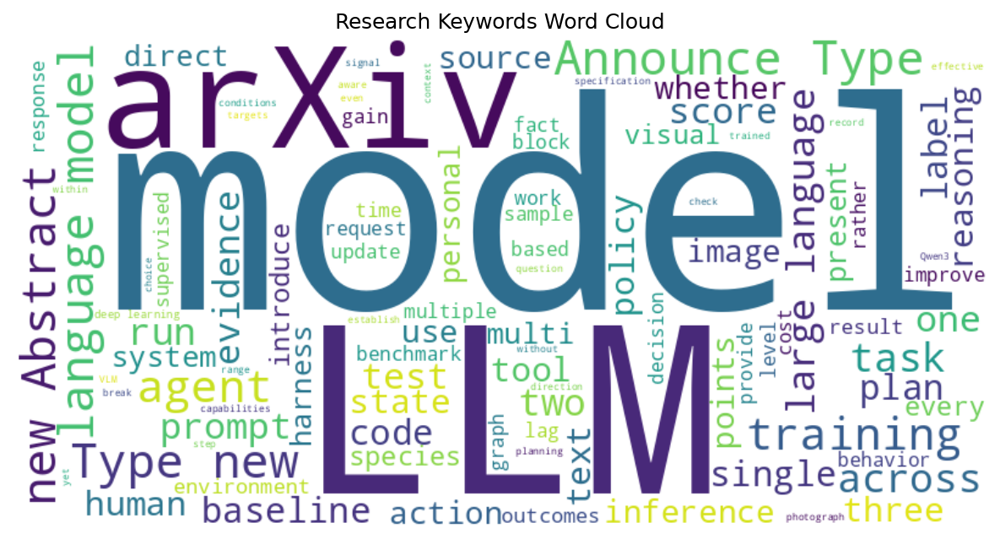

Junwei Wu, Runze Yan, Yuzhang Xie, Hanqi Luo, Ziwei Dong, Jiaying Lu, Xiao Hu, Carl Yang
Mon,
arXiv:2610.40992v1 Announce Type: new Abstract: Managing multiple chronic conditions through diet requires satisfying disease- and medication-specific requirements jointly across meals and days while...
Caleb N. Ellington, Jiaqi Wang, Sohan Addagudi, Elijah Cole
Mon,
arXiv:2610.40700v1 Announce Type: new Abstract: To rigorously establish the value of a novel deep learning method, it must be compared against appropriate baselines. As deep learning has become incre...
Nicolas Gertler, Claudio Novelli, Luciano Floridi
Mon,
arXiv:2610.40917v1 Announce Type: new Abstract: Large language models act only through the infrastructure that surrounds them. That infrastructure, the harness, determines what a model can accomplish...
Jiacheng Ding, Yanliang Qi, Cong Guo, Peihua Mai
Mon,
arXiv:2610.40971v1 Announce Type: new Abstract: We present FieldGuideRAG, a training-free GraphRAG method in which a vision-language model, or VLM, recognizes fine-grained species by comparing the qu...
Tiejin Chen, Maunil Vyas, Huaiyuan Yao, Hua Wei
Mon,
arXiv:2610.40998v1 Announce Type: new Abstract: Steering vectors (SVs) are residual-stream directions that shift the behavior of LLMs when added to hidden states at inference time. While prior work h...
Jiahe Wu, Bing Cao, Xingyue Guo, Ruipu Zhao, Beiming Yu, Jiekang Feng, Qinghua Hu, Pengfei Zhu
Mon,
arXiv:2610.40801v1 Announce Type: new Abstract: The reasoning capabilities of vision-language models (VLMs) can be limited by incomplete or inaccurate visual observations in the general domain. In un...
Jeremy Canale, Fabien Soulis
Mon,
arXiv:2610.41025v1 Announce Type: new Abstract: When a language-model agent fails a multi-step task, can another model find the decisive mistake and fix it with a single action? We introduce ReplayRC...
Wendi Li, Huseyin A. Inan, Wei-Ning Chen, Yanzhi Chen, Chetan Bansal, Saravan Rajmohan, Sharon Li
Mon,
arXiv:2610.40927v1 Announce Type: new Abstract: Test-time scaling (TTS) improves large language model agents by sampling and selecting among multiple candidate trajectories, but common realizations a...
Shikha Shrestha, William Yeoh, Ning Zhang, Yevgeniy Vorobeychik
Mon,
arXiv:2610.41040v1 Announce Type: new Abstract: LLM agents serve natural-language requests through tools, data sources, and other agents, and even simple requests often need several interdependent ca...
Amir Jalilifard, Marcos Medeiros Raimundo, Anderson Rocha
Mon,
arXiv:2610.40946v1 Announce Type: new Abstract: Chain-of-thought (CoT) reasoning allows large language models (LLMs) to generate intermediate reasoning traces in natural language while solving comple...
Armin Dadras, Tingyu Lin, Robert Sablatnig, Franziska Proksa, Markus Seidl
Mon,
arXiv:2610.41080v1 Announce Type: new Abstract: Image composition labels such as center, diagonal, or rule of thirds describe visual structure rather than object categories. KU-PCP provides image-lev...
Fengji Jing, Guy Laban
Mon,
arXiv:2610.40883v1 Announce Type: new Abstract: Voice-interactive large language models process both what a speaker says and how they say it, yet the two channels do not always agree. We ask whether ...
Grant Nasir Brown, Abdul Basir Bari, Anmol Tadikonda, Isabel Song
Mon,
arXiv:2610.40959v1 Announce Type: new Abstract: Large language models (LLMs) are increasingly used for personal tasks, yet evaluating their safe use of personal context remains difficult because such...
Khawaja Abaid Ullah, Ananya Acharya, Mohammad Javad Khojasteh
Mon,
arXiv:2610.41044v1 Announce Type: new Abstract: The use of large language models (LLMs) to coordinate multi-agent teams raises a fundamental architectural question: whether task allocation should be ...
Yu Li, Yufa Zhou, Tian Lan
Mon,
arXiv:2610.40945v1 Announce Type: new Abstract: On-policy reinforcement learning for large language models assumes that training responses are sampled from the current policy. In practice, an inferen...
Joseph Marks (NatWest Group, London, UK), Marius C. Vollberg (University of Zurich, Zurich, Switzerland, Swiss Center for Affective Sciences, Geneva, Switzerland)
Mon,
arXiv:2610.40985v1 Announce Type: new Abstract: Good decisions often require considering how outcomes will feel. Yet large language models (LLMs) increasingly enter decision workflows, despite little...
Jiannan Huang, Jerry Ding, Li Yu, Zhenting Li
Mon,
arXiv:2610.41037v1 Announce Type: new Abstract: Web overlays, such as cookie consent banners, newsletter prompts, and age gates, obstruct automated web crawlers and degrade downstream document repres...
Ayana Hussain, Nicholas Vincent
Mon,
arXiv:2610.40890v1 Announce Type: new Abstract: Large language models (LLMs) can generate detailed guidance, functional code, and persuasive text at scale. As one of the most widely used consumer lan...
Georgios Makridis, Stefanos Kampouris
Mon,
arXiv:2610.40970v1 Announce Type: new Abstract: Generative audio systems can produce large libraries of personalized bedtime content, but ordinary media objectives (retention, completion, and novelty...
Xiaojun Wu, Cehao Yang, Xuhui Jiang, Chengjin Xu, Jia Li, Jian Guo
Mon,
arXiv:2610.40858v1 Announce Type: new Abstract: Training a large language model is compute-bound, and current recipes divide the work between optimizers by hand: orthogonalized momentum for attention...
